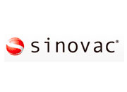

El Instituto de Productos Biológicos de Wuhan desarrolló una vacuna que usa el virus inactivado o muerto. La compañía china Sinopharm se encarga de realizar los ensayos clínicos. Se aplican dos dosis.
Sinopharm anunció que casi un millón de ciudadanos chinos se han aplicado sus vacunas. En ese país, se autorizó el uso de emergencia en julio para inocular a funcionarios del gobierno, estudiantes y trabajadores que viajaban al extranjero.
El Instituto Nacional de Salud (INS) suspendió los ensayos de las dos vacunas experimentales de Sinopharm después de que un voluntario presentara “síntomas neurológicos”.
Después de concluir que el caso reportado no estaba relacionado con la vacuna, el INS y Sinopharm reanudaron los ensayos de las dos vacunas experimentales.
Aprobación de emergencia en Emiratos Árabes Unidos
x
Aprobación anticipada en China
x
Sinopharm + Beijing
Fase 3
El Instituto de Productos Biológicos de Beijing desarrolló una vacuna que usa el virus inactivado o muerto. La compañía china Sinopharm se encarga de realizar los ensayos clínicos. Se aplican dos dosis.
Sinopharm anunció que casi un millón de ciudadanos chinos se han aplicado sus vacunas. En ese país, se autorizó el uso de emergencia en julio para inocular a funcionarios del gobierno, estudiantes y trabajadores que viajaban al extranjero.
Emiratos Árabes Unidos se convirtió en el primer país en otorgar la aprobación completa de esta vacuna contra la COVID-19. Indicaron que el preparado tiene un 86% de efectividad.
El Instituto Nacional de Salud (INS) suspendió los ensayos de las dos vacunas experimentales de Sinopharm después de que un voluntario presentara “síntomas neurológicos”.
Después de concluir que el caso reportado no estaba relacionado con la vacuna, el INS y Sinopharm reanudaron los ensayos de las dos vacunas experimentales.
Aprobación total en China, Emiratos Árabes Unidos y Bahrein.
x
Vacuna AstraZeneca + Oxford
Fase 3
Investigadores de la Universidad de Oxford modificaron un adenovirus que infecta a chimpancés para que lleve material genético del SARS-CoV-2. La compañía británico-sueca AstraZeneca se unió para realizar los ensayos clínicos de esta vacuna. Se aplican dos dosis.
La farmacéutica AztraZeneca detuvo sus ensayos clínicos de Fase 3 en todo el mundo para investigar el caso de dos voluntarios que presentaban síntomas de mielitis transversa.
Oxford y AstraZeneca anunciaron que estaban listos para reanudar los ensayos globales después de que comités independientes garantizaron la seguridad de las pruebas. En un comunicado, informaron que no hallaron pruebas suficientes para vincular la mielitis transversa a la vacunación.
19 noviembre: resultados de fase 2/3 en Reino Unido.
Personas de diversas edades (18 a más de 70 años) desarrollaron anticuerpos y células T. Los mayores generaron una respuesta inmune tan sólida como los jóvenes.
Tras analizar los primeros 131 casos de COVID-19 en los voluntarios, se determinó que la vacuna tenía una eficacia de 90% cuando se aplicaba primero media dosis y luego la dosis completa, y 62% cuando se aplicó dos dosis completas. Por esa razón, la eficacia media fue 70,4%.
8 diciembre: Resultados globales (Reino Unido, Brasil y Sudáfrica).
En un artículo científico, detallan los resultados anunciados previamente y se confirma que un voluntario que murió a causa de la COVID-19 estaba en el grupo de control (había recibido una vacuna contra otra enfermedad).
AstraZeneca anuncia la combinación de su vacuna con rusa Sputnik V (también basada en adenovirus) en un ensayo clínico para ver si ofrecen una protección más sólida.
La compañía china Cansino Biologics, en alianza con la Academia de Ciencias Militares Médicas de ese país, desarrolló una vacuna basada en el adenovirus Ad5 modificado. Se aplica una dosis.
El Instituto de Investigación Gamaleya, parte del Ministerio de Salud de Rusia, ha elaborado una vacuna que se aplica en dos dosis, primero el adenovirus modificado Ad 5 y luego el Adenovirus modificado Ad26.
x
Gamaleya Research Institute - Información de junio
Aprobación de emergencia en Biolorrusia y Argentina
x
Janssen
Fase 3
En colaboración con la estadounidense Johnson y Johson, la farmacéutica Janssen ha diseñado una vacuna de una sola dosis que usa un adenovirus modificad. También prueban su vacuna en dos dosis.
La vacuna desarrollada por la farmacéutica estadounidense se basa en proteínas del SARS-CoV-2. Específicamente, utiliza subunidades del virus (las espículas), las cuales son empleadas para generar defensas. Se aplican dos dosis.
Moderna desarrolló una vacuna basada en una molécula de ARNm, la cual contiene información genética del coronavirus para generar inmunidad en la persona. Los Institutos Nacionales de Salud de EE. UU. se unieron para realizar los ensayos clínicos.
Al igual que Moderna, BioNTech se basó en una molécula de ARNm para desarrollar su vacuna contra el SARS-CoV-2. Se asociaron con la farmacéutica Pfizer para los ensayos clínicos. Se aplican dos dosis.
Aprobación de emergencia en Reino Unido, EE. UU., España, Francia, Italia, México, Chile, Ecuador y muchos otros países.
x
Aprobación total en Bahrein, Canadá y Arabia Saudita
x
Anhui Zhifei Longcom
Fase 3
La compañía china Anhui Zhifei Longcom, en asociación con la Academia China de Ciencias Médicas, fabricaron una vacuna que contiene una parte de la proteína de espícula del coronavirus. Prueban su vacuna en 2 y 3 dosis.
La compañía india Bharat Biotech, en asociación con el Consejo Indio de Investigación Médica y el Instituto Nacional de Virología, desarrolló una vacuna basada en el coronavirus inactivado.
x
Bharat Biotech - Información de julio
13 de julio: fase 1/2 en India, 755 participantes.
La empresa canadiense Medicago Inc. desarrolló una vacuna que usa partículas basadas en plantas que imitan al coronavirus. Se asoción con la farmacéutica GSK, que elaboró un potente adyuvante.
La vacuna desarrollada por la compañía neerlandesa-alemana CureVac es otra que se basa en una molécula de ARNm con información del SARS-CoV-2, pero, a diferencia de Moderna y Pfizer, el preparado requiere ser almacenado a temperaturas menos frías. Se aplican dos dosis.
x
CureVac - Información de junio
18 de junio: fase 1 en Bélgica y Alemania, 280 participantes.
En tiempo récord: así fue la carrera para lograr las vacunas contra la COVID-19
A menos de diez meses desde que se declaró la pandemia de COVID-19, ya hay vacunas aprobadas contra esta enfermedad.
Para llegar a dicha meta, los laboratorios deben llevar a cabo pruebas en animales y tres fases de ensayos clínicos (humanos). Solo así se puede garantizar la seguridad y efectividad de una vacuna.
Las candidatas más avanzadas

Sinovac
Sinopharm + Wuhan
Sinopharm + Beijing
AstraZeneca + Oxford
CanSino Biologics Inc.
Gamaleya Research Institute
Janssen
Novavax
Moderna + NIAID
BioNTech+ Pfizer
Anhui Zhifei Longcom
Inovio
Bharat Biotech
Medicago Inc.
CureVac
Las candidatas más avanzadas
Sinovac
Sinopharm + Wuhan
Sinopharm + Beijing
AstraZeneca + Oxford
CanSino Biologics Inc.
Gamaleya Research Institute
Janssen
Novavax
Moderna + NIAID
BioNTech+ Pfizer
Anhui Zhifei Longcom
Inovio
Bharat Biotech
Medicago Inc.
CureVac
Elige cualquier candidata para ver su camino hacia la vacuna
Marzo
Abril
Mayo
Junio
Julio
Agosto
Septiembre
Octubre
Noviembre
Diciembre
Aprobación anticipada
Aprobación de emergencia
Meta
Aprobación anticipada: Esta autorización se otorga sin esperar resultados de los ensayos clínicos. Los expertos advierten de los riesgos de esta medida.
Aprobación para uso de emergencia: Cuando hay una crisis de salud pública como la actual pandemia, los países pueden otorgar la aprobación de emergencia a una vacuna después de haber revisado los resultados preliminares que garanticen su seguridad y eficacia.
Meta / Aprobación total: Los organismos reguladores revisan los resultados completos de los ensayos clínicos y deciden si otorgan la aprobación total para uso masivo y comercial.
Nota: ¿Por qué algunos laboratorios repiten fases de ensayos clínicos?
Prueban otra combinación de dosis o en otro grupo de participantes, como trabajadores del sector salud o adultos mayores. El objetivo es recoger la mayor información posible para hacer un estudio más completo.
.png?v=1605290186646)